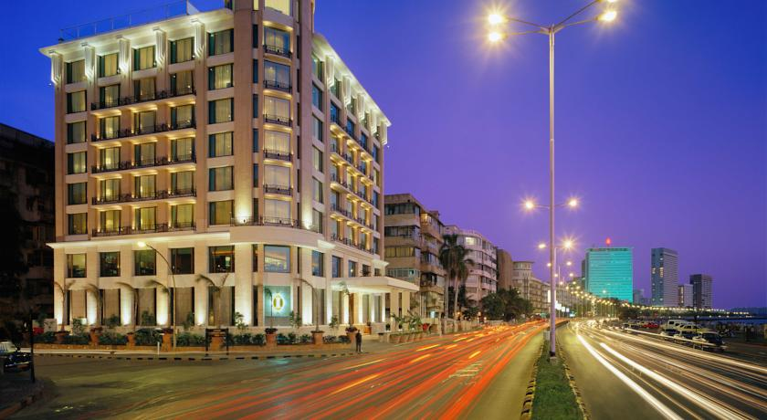
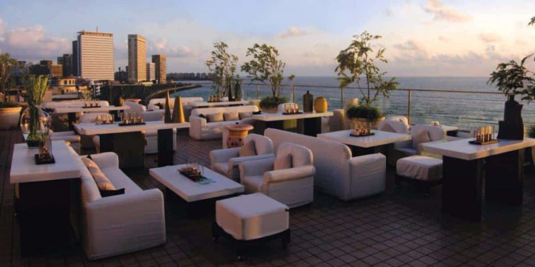

InterContinental
InterContinental Marine-drive Mumbai offers intimate modern hospitality alongside sweeping views of the Arabian Sea. Enjoy award-winning cuisine from world-renowned chefs, and encounter the best rooftop sunset pool views with your plush luxury accommodation in the city. As one of the hotels on Marine Drive, business travellers can take advantage of our location as being near one of Mumbai's top leisure and meeting spaces in the city
InterContinental Marine Drive offers meeting facilities with advanced technological capabilities and an in house meeting planner to take care of each function in finer detail
+91-22-39879999
dosm@intercontinentalmumbai.com

